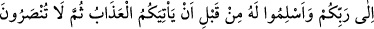
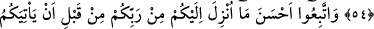
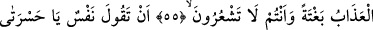
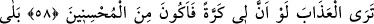
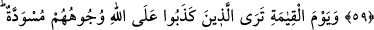
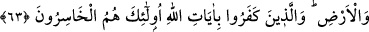

ALLAH’IN RAHMETİNDEN
ÜMİT KESMEYİN!
53. De ki: Ey kendi nefisleri aleyhine haddi aşan kullarım! Allah’ın rahmetinden
ümit kesmeyin! Çünkü Allah bütün günahları bağışlar. Şüphesiz ki O, çok
bağışlayan, çok esirgeyendir.
54. Size azap gelip çatmadan önce Rabbinize dönün, O’na teslim olun, sonra size
yardım edilmez.
55. Siz farkında olmadan, ansızın başınıza azap gelmezden önce, Rabbinizden
size indirilenin en güzeline (Kur’an’a) tâbi olun.
56. Kişinin: Allah’a yakınlık konusunda kusurlu davrandığım için bana yazıklar
olsun! Gerçekten ben alay edenlerdendim (diyeceği günden sakının)!
57. Veya: Allah bana hidayet verseydi, elbette sakınanlardan olurdum.
58. Yahut azâbı gördüğünde: Keşke benim için bir kez (dönmeye) imkân bulunsa
da iyilerden olsam! diyeceği günden sakının.
59. Hayır (dönemeyeceksin)! Âyetlerim sana gelmişti de sen onları yalanlamış,